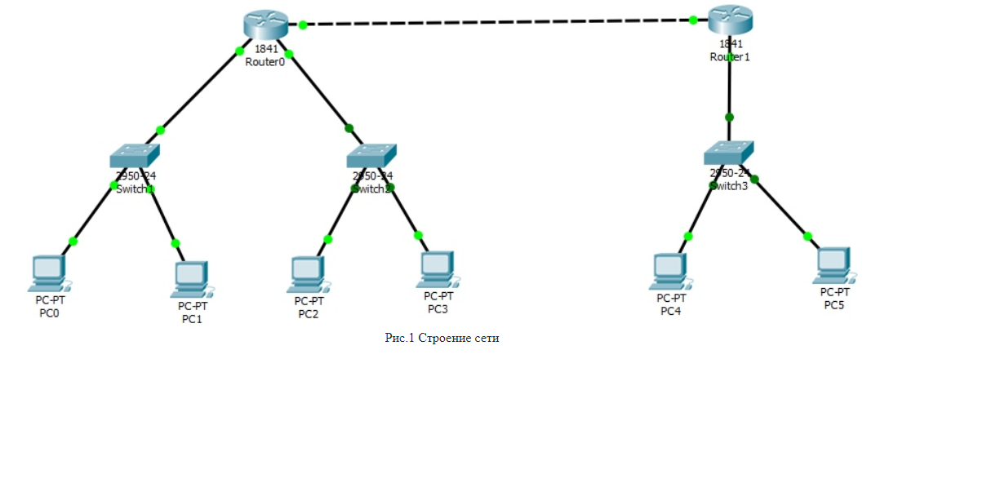
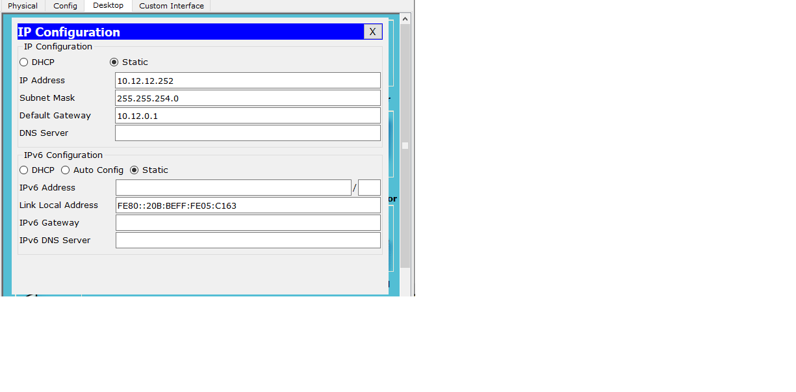

Для 3-ей лабораторной работы необходимо было построить сеть и настроить отправку сообщений между подсетями A,B,C.
Количество узлов в сети LAN A - 400
Количество узлов в сети LAN B - 900
Количество узлов в сети LAN C - 1300
Построение сети вяглядит следующим образом:
Далее необходимо выполнить настройки подсетей. Для этого в конфигурации прописывается IP-адресс компьютера и его маска
После всех настроек пускаем пакеты по сети между подсетями A,B,C. Если пакеты проходят, то результатом будет "successful"
Как можно увидеть, результатом является "successful", следовательно пакеты между подсетями проходят успешно